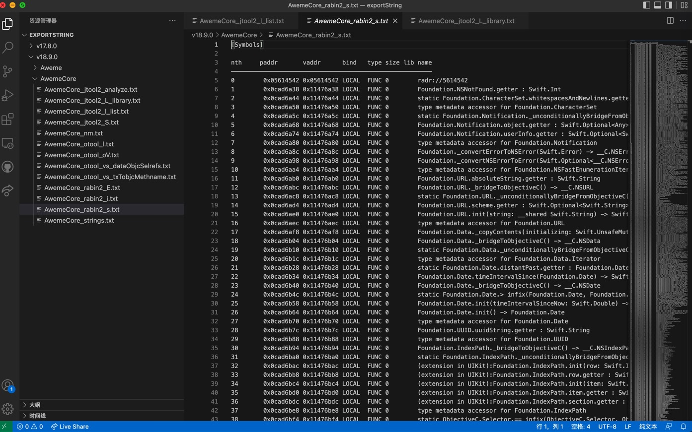
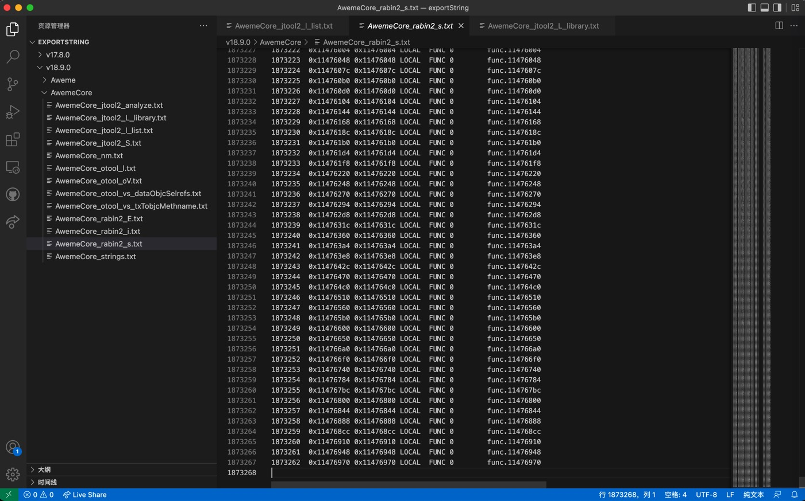

rabin2用法举例：AwemeCore
用rabin2查看抖音AwemeCore二进制的信息：
概述：
(1) File Identification
rabin2 -I AwemeCore
(2) Entrypoint
rabin2 -e AwemeCore
(3) Imports
rabin2 -i AwemeCore
(4) Exports
rabin2 -E AwemeCore > AwemeCore_rabin2_E.txt
(5) Symbols
rabin2 -s AwemeCore > AwemeCore_rabin2_s.txt
rabin2 -sr AwemeCore > AwemeCore_rabin2_sr.txt
(6) Libraries
rabin2 -l AwemeCore > AwemeCore_rabin2_l.txt
(7) Strings
rabin2 -z AwemeCore > AwemeCore_rabin2_z.txt
rabin2 -zr AwemeCore > AwemeCore_rabin2_zr.txt
(8) Program Sections
rabin2 -S AwemeCore > AwemeCore_rabin2_S_section.txt
rabin2 -Sr AwemeCore > AwemeCore_rabin2_Sr_section.txt
详解：
-I: File Identification
➜ AwemeCore rabin2 -I ../../../../已脱壳/v18.9.0/Payload/Aweme.app/Frameworks/AwemeCore.framework/AwemeCore
arch arm
baddr 0x0
binsz 240666608
bintype mach0
bits 64
canary true
class MACH064
crypto false
endian little
havecode true
laddr 0x0
lang swift
linenum false
lsyms false
machine all
maxopsz 16
minopsz 1
nx false
os ios
pcalign 0
pic false
relocs false
sanitiz false
static false
stripped true
subsys darwin
va true
-Ir
➜ AwemeCore rabin2 -Ir ../../../../已脱壳/v18.9.0/Payload/Aweme.app/Frameworks/AwemeCore.framework/AwemeCore
e cfg.bigendian=false
e asm.bits=64
e asm.dwarf=true
e bin.lang=swift
e file.type=mach0
e asm.os=ios
e asm.arch=arm
e asm.pcalign=0
-e： Entrypoint
➜ AwemeCore rabin2 -e ../../../../已脱壳/v18.9.0/Payload/Aweme.app/Frameworks/AwemeCore.framework/AwemeCore
[Entrypoints]
vaddr=0x00023448 paddr=0x00023448 haddr=-1 type=program
1 entrypoints
-er
➜ AwemeCore rabin2 -er ../../../../已脱壳/v18.9.0/Payload/Aweme.app/Frameworks/AwemeCore.framework/AwemeCore
fs symbols
"f entry0 1 0x00023448"
"f entry0_haddr 1 0xffffffffffffffff"
"s entry0"
-i: Imports
➜ AwemeCore rabin2 -i ../../../../已脱壳/v18.9.0/Payload/Aweme.app/Frameworks/AwemeCore.framework/AwemeCore > AwemeCore_rabin2_i.txt
输出内容：
[Imports]
nth vaddr bind type lib name
――――――――――――――――――――――――――――――――――――――――――――
0 0x11476a38 NONE FUNC sym.imp.Foundation.NSNotFound.getter : Swift.Int
1 0x11476a44 NONE FUNC sym.imp.static Foundation.CharacterSet.whitespacesAndNewlines.getter : Foundation.CharacterSet
2 0x11476a50 NONE FUNC sym.imp.type metadata accessor for Foundation.CharacterSet
3 0x11476a5c NONE FUNC sym.imp.static Foundation.Notification._unconditionallyBridgeFromObjectiveC(Swift.Optional<__C.NSNotification>) -> Foundation.Notification
4 0x11476a68 NONE FUNC sym.imp.Foundation.Notification.object.getter : Swift.Optional<Any>
5 0x11476a74 NONE FUNC sym.imp.Foundation.Notification.userInfo.getter : Swift.Optional<Swift.Dictionary<Swift.AnyHashable, Any>>
6 0x11476a80 NONE FUNC sym.imp.type metadata accessor for Foundation.Notification
7 0x11476a8c NONE FUNC sym.imp.Foundation._convertErrorToNSError(Swift.Error) -> __C.NSError
8 0x11476a98 NONE FUNC sym.imp.Foundation._convertNSErrorToError(Swift.Optional<__C.NSError>) -> Swift.Error
9 0x11476aa4 NONE FUNC sym.imp.type metadata accessor for Foundation.NSFastEnumerationIterator
10 0x00000000 NONE FUNC sym.imp.protocol conformance descriptor for Foundation.NSFastEnumerationIterator : Swift.IteratorProtocol in Foundation
11 0x11476ab0 NONE FUNC sym.imp.Foundation.URL.absoluteString.getter : Swift.String
12 0x11476abc NONE FUNC sym.imp.Foundation.URL._bridgeToObjectiveC() -> __C.NSURL
13 0x11476ac8 NONE FUNC sym.imp.static Foundation.URL._unconditionallyBridgeFromObjectiveC(Swift.Optional<__C.NSURL>) -> Foundation.URL
14 0x11476ad4 NONE FUNC sym.imp.Foundation.URL.scheme.getter : Swift.Optional<Swift.String>
15 0x11476ae0 NONE FUNC sym.imp.Foundation.URL.init(string: __shared Swift.String) -> Swift.Optional<Foundation.URL>
16 0x11476aec NONE FUNC sym.imp.type metadata accessor for Foundation.URL
17 0x00000000 NONE FUNC sym.imp.nominal type descriptor for Foundation.URL
18 0x11476af8 NONE FUNC sym.imp.Foundation.Data._copyContents(initializing: Swift.UnsafeMutableBufferPointer<Swift.UInt8>) -> (Foundation.Data.Iterator, Swift.Int)
19 0x11476b04 NONE FUNC sym.imp.Foundation.Data._bridgeToObjectiveC() -> __C.NSData
20 0x11476b10 NONE FUNC sym.imp.static Foundation.Data._unconditionallyBridgeFromObjectiveC(Swift.Optional<__C.NSData>) -> Foundation.Data
21 0x11476b1c NONE FUNC sym.imp.type metadata accessor for Foundation.Data.Iterator
22 0x00000000 NONE FUNC sym.imp.type metadata for Foundation.Data
23 0x11476b28 NONE FUNC sym.imp.static Foundation.Date.distantPast.getter : Foundation.Date
24 0x11476b34 NONE FUNC sym.imp.Foundation.Date.timeIntervalSince(Foundation.Date) -> Swift.Double
25 0x11476b40 NONE FUNC sym.imp.Foundation.Date._bridgeToObjectiveC() -> __C.NSDate
26 0x11476b4c NONE FUNC sym.imp.static Foundation.Date.> infix(Foundation.Date, Foundation.Date) -> Swift.Bool
27 0x11476b58 NONE FUNC sym.imp.Foundation.Date.init(timeIntervalSinceNow: Swift.Double) -> Foundation.Date
28 0x11476b64 NONE FUNC sym.imp.Foundation.Date.init() -> Foundation.Date
29 0x11476b70 NONE FUNC sym.imp.type metadata accessor for Foundation.Date
30 0x00000000 NONE FUNC sym.imp.nominal type descriptor for Foundation.Date
31 0x11476b7c NONE FUNC sym.imp.Foundation.UUID.uuidString.getter : Swift.String
32 0x11476b88 NONE FUNC sym.imp.type metadata accessor for Foundation.UUID
33 0x11476b94 NONE FUNC sym.imp.Foundation.IndexPath._bridgeToObjectiveC() -> __C.NSIndexPath
34 0x11476ba0 NONE FUNC sym.imp.static Foundation.IndexPath._unconditionallyBridgeFromObjectiveC(Swift.Optional<__C.NSIndexPath>) -> Foundation.IndexPath
35 0x11476bac NONE FUNC sym.imp.(extension in UIKit):Foundation.IndexPath.init(row: Swift.Int, section: Swift.Int) -> Foundation.IndexPath
36 0x11476bb8 NONE FUNC sym.imp.(extension in UIKit):Foundation.IndexPath.row.getter : Swift.Int
37 0x11476bc4 NONE FUNC sym.imp.(extension in UIKit):Foundation.IndexPath.init(item: Swift.Int, section: Swift.Int) -> Foundation.IndexPath
38 0x11476bd0 NONE FUNC sym.imp.(extension in UIKit):Foundation.IndexPath.item.getter : Swift.Int
39 0x11476bdc NONE FUNC sym.imp.(extension in UIKit):Foundation.IndexPath.section.getter : Swift.Int
40 0x11476be8 NONE FUNC sym.imp.type metadata accessor for Foundation.IndexPath
41 0x00000000 NONE FUNC sym.imp.nominal type descriptor for Foundation.IndexPath
...
4922 0x1147ea84 NONE FUNC vImageConverter_CreateWithCGImageFormat
4923 0x1147ea90 NONE FUNC vImageConverter_Release
4924 0x1147ea9c NONE FUNC vImageCreateCGImageFromBuffer
4925 0x1147eaa8 NONE FUNC vImageHorizontalReflect_ARGB8888
4926 0x1147eab4 NONE FUNC vImageMatrixMultiply_ARGB8888
4927 0x1147eac0 NONE FUNC vImageMatrixMultiply_ARGB8888ToPlanar8
4928 0x1147eacc NONE FUNC vImagePermuteChannels_ARGB8888
4929 0x1147ead8 NONE FUNC vImagePremultiplyData_RGBA8888
4930 0x1147eae4 NONE FUNC vImageRotate90_ARGB8888
4931 0x1147eaf0 NONE FUNC vImageRotate90_Planar16U
4932 0x1147eafc NONE FUNC vImageRotate90_Planar8
4933 0x1147eb08 NONE FUNC vImageScale_ARGB8888
4934 0x1147eb14 NONE FUNC vImageScale_Planar16U
4935 0x1147eb20 NONE FUNC vImageScale_Planar8
4936 0x1147eb2c NONE FUNC vImageTentConvolve_ARGB8888
4937 0x1147eb38 NONE FUNC vImageUnpremultiplyData_ARGB8888
4938 0x1147eb44 NONE FUNC vImageUnpremultiplyData_RGBA8888
4939 0x1147eb50 NONE FUNC vImageVerticalReflect_ARGB8888
4940 0x1147eb5c NONE FUNC vasprintf
4941 0x1147eb68 NONE FUNC vfprintf
4942 0x1147eb74 NONE FUNC vm_allocate
4943 0x1147eb80 NONE FUNC vm_deallocate
4944 0x00000000 NONE FUNC vm_kernel_page_size
4945 0x1147eb8c NONE FUNC vm_map_page_query
4946 0x00000000 NONE FUNC vm_page_mask
4947 0x00000000 NONE FUNC vm_page_size
4948 0x1147eb98 NONE FUNC vm_protect
4949 0x1147eba4 NONE FUNC vm_read
4950 0x1147ebb0 NONE FUNC vm_read_overwrite
4951 0x1147ebbc NONE FUNC vm_region_64
4952 0x1147ebc8 NONE FUNC vm_region_recurse_64
4953 0x1147ebd4 NONE FUNC vm_remap
4954 0x1147ebe0 NONE FUNC vprintf
4955 0x1147ebec NONE FUNC vsnprintf
4956 0x1147ebf8 NONE FUNC vsprintf
4957 0x1147ec04 NONE FUNC vvexpf
4958 0x1147ec10 NONE FUNC vvsqrt
4959 0x00000000 NONE FUNC wait
4960 0x1147ec1c NONE FUNC wcscat
4961 0x1147ec28 NONE FUNC wcschr
4962 0x1147ec34 NONE FUNC wcscmp
4963 0x1147ec40 NONE FUNC wcscpy
4964 0x1147ec4c NONE FUNC wcsftime
4965 0x1147ec58 NONE FUNC wcslen
4966 0x1147ec64 NONE FUNC wcsncat
4967 0x1147ec70 NONE FUNC wcsncpy
4968 0x1147ec7c NONE FUNC wcstok
4969 0x1147ec88 NONE FUNC wcstombs
4970 0x1147ec94 NONE FUNC wmemcmp
4971 0x1147eca0 NONE FUNC wmemcpy
4972 0x1147ecac NONE FUNC write
4973 0x1147ecb8 NONE FUNC writev
4974 0x1147ecc4 NONE FUNC xmlAddChild
4975 0x1147ecd0 NONE FUNC xmlBufferContent
4976 0x1147ecdc NONE FUNC xmlBufferCreate
4977 0x1147ece8 NONE FUNC xmlBufferFree
4978 0x1147ecf4 NONE FUNC xmlBufferLength
4979 0x1147ed00 NONE FUNC xmlCheckVersion
4980 0x1147ed0c NONE FUNC xmlCleanupParser
4981 0x1147ed18 NONE FUNC xmlCopyNode
4982 0x1147ed24 NONE FUNC xmlCreatePushParserCtxt
4983 0x1147ed30 NONE FUNC xmlDocDumpMemory
4984 0x1147ed3c NONE FUNC xmlDocGetRootElement
4985 0x1147ed48 NONE FUNC xmlDocSetRootElement
4986 0x1147ed54 NONE FUNC xmlFirstElementChild
4987 0x00000000 NONE FUNC xmlFree
4988 0x1147ed60 NONE FUNC xmlFreeDoc
4989 0x1147ed6c NONE FUNC xmlFreeNode
4990 0x1147ed78 NONE FUNC xmlFreeNs
4991 0x1147ed84 NONE FUNC xmlFreeNsList
4992 0x1147ed90 NONE FUNC xmlFreeParserCtxt
4993 0x1147ed9c NONE FUNC xmlGetProp
4994 0x1147eda8 NONE FUNC xmlHasNsProp
4995 0x1147edb4 NONE FUNC xmlHasProp
4996 0x1147edc0 NONE FUNC xmlInitParser
4997 0x1147edcc NONE FUNC xmlNewDoc
4998 0x1147edd8 NONE FUNC xmlNewNode
4999 0x1147ede4 NONE FUNC xmlNewNs
5000 0x1147edf0 NONE FUNC xmlNewNsProp
5001 0x1147edfc NONE FUNC xmlNewProp
5002 0x1147ee08 NONE FUNC xmlNewText
5003 0x1147ee14 NONE FUNC xmlNextElementSibling
5004 0x1147ee20 NONE FUNC xmlNodeDump
5005 0x1147ee2c NONE FUNC xmlNodeGetContent
5006 0x1147ee38 NONE FUNC xmlNodeListGetString
5007 0x1147ee44 NONE FUNC xmlNodeSetContent
5008 0x1147ee50 NONE FUNC xmlNodeSetName
5009 0x1147ee5c NONE FUNC xmlParseChunk
5010 0x1147ee68 NONE FUNC xmlReadMemory
5011 0x1147ee74 NONE FUNC xmlSearchNs
5012 0x1147ee80 NONE FUNC xmlSearchNsByHref
5013 0x1147ee8c NONE FUNC xmlSetNs
5014 0x1147ee98 NONE FUNC xmlSetTreeDoc
5015 0x1147eea4 NONE FUNC xmlStrEqual
5016 0x1147eeb0 NONE FUNC xmlStrcmp
5017 0x1147eebc NONE FUNC xmlStrdup
5018 0x1147eec8 NONE FUNC xmlStrlen
5019 0x1147eed4 NONE FUNC xmlStrsub
5020 0x1147eee0 NONE FUNC xmlUnlinkNode
5021 0x1147eeec NONE FUNC xmlXPathEval
5022 0x1147eef8 NONE FUNC xmlXPathFreeContext
5023 0x1147ef04 NONE FUNC xmlXPathFreeObject
5024 0x1147ef10 NONE FUNC xmlXPathNewContext
5025 0x1147ef1c NONE FUNC xmlXPathRegisterNs
5026 0x1147ef28 NONE FUNC zlibCompileFlags
5027 0x1147ef34 NONE FUNC zlibVersion
5028 0x00000000 NONE FUNC dyld_stub_binder
结果分析
- 对比1：内容很像是nm输出的结果
rabin2 -i5024 0x1147ef10 NONE FUNC xmlXPathNewContext 5025 0x1147ef1c NONE FUNC xmlXPathRegisterNs 5026 0x1147ef28 NONE FUNC zlibCompileFlags 5027 0x1147ef34 NONE FUNC zlibVersion 5028 0x00000000 NONE FUNC dyld_stub_bindernmU _xmlXPathNewContext U _xmlXPathRegisterNs U _zlibCompileFlags U _zlibVersion U dyld_stub_binder
- 对比2：rabin2比nm的更加易懂
rabin2 -i0 0x11476a38 NONE FUNC sym.imp.Foundation.NSNotFound.getter : Swift.Int 1 0x11476a44 NONE FUNC sym.imp.static Foundation.CharacterSet.whitespacesAndNewlines.getter : Foundation.CharacterSet 2 0x11476a50 NONE FUNC sym.imp.type metadata accessor for Foundation.CharacterSet 3 0x11476a5c NONE FUNC sym.imp.static Foundation.Notification._unconditionallyBridgeFromObjectiveC(Swift.Optional<__C.NSNotification>) -> Foundation.Notification 4 0x11476a68 NONE FUNC sym.imp.Foundation.Notification.object.getter : Swift.Optional<Any> 5 0x11476a74 NONE FUNC sym.imp.Foundation.Notification.userInfo.getter : Swift.Optional<Swift.Dictionary<Swift.AnyHashable, Any>> 6 0x11476a80 NONE FUNC sym.imp.type metadata accessor for Foundation.Notification 7 0x11476a8c NONE FUNC sym.imp.Foundation._convertErrorToNSError(Swift.Error) -> __C.NSError 8 0x11476a98 NONE FUNC sym.imp.Foundation._convertNSErrorToError(Swift.Optional<__C.NSError>) -> Swift.Error 9 0x11476aa4 NONE FUNC sym.imp.type metadata accessor for Foundation.NSFastEnumerationIteratornmU _$s10Foundation10NSNotFoundSivg U _$s10Foundation12CharacterSetV22whitespacesAndNewlinesACvgZ U _$s10Foundation12CharacterSetVMa U _$s10Foundation12NotificationV36_unconditionallyBridgeFromObjectiveCyACSo14NSNotificationCSgFZ U _$s10Foundation12NotificationV6objectypSgvg U _$s10Foundation12NotificationV8userInfoSDys11AnyHashableVypGSgvg U _$s10Foundation12NotificationVMa U _$s10Foundation22_convertErrorToNSErrorySo0E0Cs0C0_pF U _$s10Foundation22_convertNSErrorToErrorys0E0_pSo0C0CSgF U _$s10Foundation25NSFastEnumerationIteratorVMa
-E: Exports
➜ AwemeCore rabin2 -E ../../../../已脱壳/v18.9.0/Payload/Aweme.app/Frameworks/AwemeCore.framework/AwemeCore > AwemeCore_rabin2_E.txt
[Exports]
nth paddr vaddr bind type size lib name
―――――――――――――――――――――――――――――――――――――――――――――――――――――
2840 0x00b8e0b8 0x00b8e0b8 GLOBAL FUNC 0 _OBJC_METACLASS_$_AWEFriendsActivityWidgetConfigurationIntentResponse
2841 0x00b8e0e0 0x00b8e0e0 GLOBAL FUNC 0 _OBJC_METACLASS_$_AWEFriendsActivityWidgetLandingPageResolutionResult
2842 0x00b8e130 0x00b8e130 GLOBAL FUNC 0 _OBJC_METACLASS_$_AWEFriendsWidgetsColorSchemeResolutionResult
2843 0x00b8e068 0x00b8e068 GLOBAL FUNC 0 _OBJC_CLASS_$_AWEFriendsActivityWidgetConfigurationIntent
2844 0x00b8e090 0x00b8e090 GLOBAL FUNC 0 _OBJC_CLASS_$_AWEFriendsActivityWidgetConfigurationIntentResponse
2845 0x00b8e108 0x00b8e108 GLOBAL FUNC 0 _OBJC_CLASS_$_AWEFriendsActivityWidgetLandingPageResolutionResult
2846 0x00b8e158 0x00b8e158 GLOBAL FUNC 0 _OBJC_CLASS_$_AWEFriendsWidgetsColorSchemeResolutionResult
2847 0x0c46ffcc 0x10e0ffcc GLOBAL FUNC 0 _awemeMain
-s: Symbols
➜ AwemeCore rabin2 -s ../../../../已脱壳/v18.9.0/Payload/Aweme.app/Frameworks/AwemeCore.framework/AwemeCore > AwemeCore_rabin2_s.txt
[Symbols]
nth paddr vaddr bind type size lib name
――――――――――――――――――――――――――――――――――――――――――――――――――――――――
0 0x05614542 0x05614542 LOCAL FUNC 0 radr://5614542
1 0x0cad6a38 0x11476a38 LOCAL FUNC 0 Foundation.NSNotFound.getter : Swift.Int
2 0x0cad6a44 0x11476a44 LOCAL FUNC 0 static Foundation.CharacterSet.whitespacesAndNewlines.getter : Foundation.CharacterSet
3 0x0cad6a50 0x11476a50 LOCAL FUNC 0 type metadata accessor for Foundation.CharacterSet
...
2836 0x0cadef1c 0x1147ef1c LOCAL FUNC 0 imp.xmlXPathRegisterNs
2837 0x0cadef28 0x1147ef28 LOCAL FUNC 0 imp.zlibCompileFlags
2838 0x0cadef34 0x1147ef34 LOCAL FUNC 0 imp.zlibVersion
2839 0x00b8e040 0x00b8e040 GLOBAL FUNC 0 imp._OBJC_METACLASS_$_AWEFriendsActivityWidgetConfigurationIntent
2840 0x00b8e0b8 0x00b8e0b8 GLOBAL FUNC 0 _OBJC_METACLASS_$_AWEFriendsActivityWidgetConfigurationIntentResponse
2841 0x00b8e0e0 0x00b8e0e0 GLOBAL FUNC 0 _OBJC_METACLASS_$_AWEFriendsActivityWidgetLandingPageResolutionResult
2842 0x00b8e130 0x00b8e130 GLOBAL FUNC 0 _OBJC_METACLASS_$_AWEFriendsWidgetsColorSchemeResolutionResult
2843 0x00b8e068 0x00b8e068 GLOBAL FUNC 0 _OBJC_CLASS_$_AWEFriendsActivityWidgetConfigurationIntent
2844 0x00b8e090 0x00b8e090 GLOBAL FUNC 0 _OBJC_CLASS_$_AWEFriendsActivityWidgetConfigurationIntentResponse
2845 0x00b8e108 0x00b8e108 GLOBAL FUNC 0 _OBJC_CLASS_$_AWEFriendsActivityWidgetLandingPageResolutionResult
2846 0x00b8e158 0x00b8e158 GLOBAL FUNC 0 _OBJC_CLASS_$_AWEFriendsWidgetsColorSchemeResolutionResult
2847 0x0c46ffcc 0x10e0ffcc GLOBAL FUNC 0 _awemeMain
2848 0x05924000 0x05924000 LOCAL FUNC 0 func.05924000
2849 0x05924290 0x05924290 LOCAL FUNC 0 func.05924290
...
1873257 0x11476844 0x11476844 LOCAL FUNC 0 func.11476844
1873258 0x11476888 0x11476888 LOCAL FUNC 0 func.11476888
1873259 0x114768cc 0x114768cc LOCAL FUNC 0 func.114768cc
1873260 0x11476910 0x11476910 LOCAL FUNC 0 func.11476910
1873261 0x11476948 0x11476948 LOCAL FUNC 0 func.11476948
1873262 0x11476970 0x11476970 LOCAL FUNC 0 func.11476970


-sr
➜ AwemeCore rabin2 -sr ../../../../已脱壳/v18.9.0/Payload/Aweme.app/Frameworks/AwemeCore.framework/AwemeCore > AwemeCore_rabin2_sr.txt
fs symbols
"f sym.radr:__5614542 0 0x05614542"
fs imports
"f sym.Foundation.NSNotFound.getter_:_Swift.Int 0 0x11476a38"
"f sym.static_Foundation.CharacterSet.whitespacesAndNewlines.getter_:_Foundation.CharacterSet 0 0x11476a44"
"f sym.type_metadata_accessor_for_Foundation.CharacterSet 0 0x11476a50"
"f sym.static_Foundation.Notification._unconditionallyBridgeFromObjectiveC_Swift.Optional___C.NSNotification______Foundation.Notific 0 0x11476a5c"
"f sym.Foundation.Notification.object.getter_:_Swift.Optional_Any 0 0x11476a68"
"f sym.Foundation.Notification.userInfo.getter_:_Swift.Optional_Swift.Dictionary_Swift.AnyHashable__Any 0 0x11476a74"
"f sym.type_metadata_accessor_for_Foundation.Notification 0 0x11476a80"
"f sym.Foundation._convertErrorToNSError_Swift.Error_______C.NSError 0 0x11476a8c"
"f sym.Foundation._convertNSErrorToError_Swift.Optional___C.NSError______Swift.Error 0 0x11476a98"
...
"f sym.func.11476888 0 0x11476888"
"f sym.func.114768cc 0 0x114768cc"
"f sym.func.11476910 0 0x11476910"
"f sym.func.11476948 0 0x11476948"
"f sym.func.11476970 0 0x11476970"
-l: Libraries
➜ AwemeCore rabin2 -l ../../../../已脱壳/v18.9.0/Payload/Aweme.app/Frameworks/AwemeCore.framework/AwemeCore > AwemeCore_rabin2_l.txt
[Linked libraries]
/usr/lib/libcompression.dylib
@rpath/BDLRepairer.framework/BDLRepairer
/usr/lib/libc++.1.dylib
/System/Library/Frameworks/AdServices.framework/AdServices
/System/Library/Frameworks/AppTrackingTransparency.framework/AppTrackingTransparency
/System/Library/Frameworks/AuthenticationServices.framework/AuthenticationServices
/System/Library/Frameworks/CoreHaptics.framework/CoreHaptics
/System/Library/Frameworks/CoreTelephony.framework/CoreTelephony
/System/Library/Frameworks/MetalKit.framework/MetalKit
/System/Library/Frameworks/MetalPerformanceShaders.framework/MetalPerformanceShaders
/System/Library/Frameworks/MetricKit.framework/MetricKit
/System/Library/Frameworks/StoreKit.framework/StoreKit
@rpath/VolcEngineRTC.framework/VolcEngineRTC
@rpath/byteaudio.framework/byteaudio
/usr/lib/libbz2.1.0.dylib
/usr/lib/libc++abi.dylib
/usr/lib/libiconv.2.dylib
/usr/lib/libicucore.A.dylib
/usr/lib/liblzma.5.dylib
/usr/lib/libSystem.B.dylib
/usr/lib/libresolv.9.dylib
/usr/lib/libsqlite3.dylib
/usr/lib/libxml2.2.dylib
/usr/lib/libz.1.dylib
/System/Library/Frameworks/ARKit.framework/ARKit
/System/Library/Frameworks/AVFoundation.framework/AVFoundation
/System/Library/Frameworks/AVKit.framework/AVKit
/System/Library/Frameworks/Accelerate.framework/Accelerate
/System/Library/Frameworks/AdSupport.framework/AdSupport
/System/Library/Frameworks/AddressBook.framework/AddressBook
/System/Library/Frameworks/AssetsLibrary.framework/AssetsLibrary
/System/Library/Frameworks/AudioToolbox.framework/AudioToolbox
/System/Library/Frameworks/CFNetwork.framework/CFNetwork
/System/Library/Frameworks/Contacts.framework/Contacts
/System/Library/Frameworks/ContactsUI.framework/ContactsUI
/System/Library/Frameworks/CoreAudio.framework/CoreAudio
/System/Library/Frameworks/CoreAudioKit.framework/CoreAudioKit
/System/Library/Frameworks/CoreFoundation.framework/CoreFoundation
/System/Library/Frameworks/CoreGraphics.framework/CoreGraphics
/System/Library/Frameworks/CoreImage.framework/CoreImage
/System/Library/Frameworks/CoreLocation.framework/CoreLocation
/System/Library/Frameworks/CoreML.framework/CoreML
/System/Library/Frameworks/CoreMedia.framework/CoreMedia
/System/Library/Frameworks/CoreMotion.framework/CoreMotion
/System/Library/Frameworks/MobileCoreServices.framework/MobileCoreServices
/System/Library/Frameworks/CoreSpotlight.framework/CoreSpotlight
/System/Library/Frameworks/CoreText.framework/CoreText
/System/Library/Frameworks/CoreVideo.framework/CoreVideo
/System/Library/Frameworks/EventKit.framework/EventKit
/System/Library/Frameworks/Foundation.framework/Foundation
/System/Library/Frameworks/GLKit.framework/GLKit
/System/Library/Frameworks/GameplayKit.framework/GameplayKit
/System/Library/Frameworks/IOKit.framework/Versions/A/IOKit
/System/Library/Frameworks/ImageIO.framework/ImageIO
/System/Library/Frameworks/Intents.framework/Intents
/System/Library/Frameworks/JavaScriptCore.framework/JavaScriptCore
/System/Library/Frameworks/LocalAuthentication.framework/LocalAuthentication
/System/Library/Frameworks/MapKit.framework/MapKit
/System/Library/Frameworks/MediaAccessibility.framework/MediaAccessibility
/System/Library/Frameworks/MediaPlayer.framework/MediaPlayer
/System/Library/Frameworks/MediaToolbox.framework/MediaToolbox
/System/Library/Frameworks/MessageUI.framework/MessageUI
/System/Library/Frameworks/Metal.framework/Metal
/System/Library/Frameworks/NetworkExtension.framework/NetworkExtension
/System/Library/Frameworks/OpenAL.framework/OpenAL
/System/Library/Frameworks/OpenGLES.framework/OpenGLES
/System/Library/Frameworks/Photos.framework/Photos
/System/Library/Frameworks/PhotosUI.framework/PhotosUI
/System/Library/Frameworks/QuartzCore.framework/QuartzCore
/System/Library/Frameworks/ReplayKit.framework/ReplayKit
/System/Library/Frameworks/SafariServices.framework/SafariServices
/System/Library/Frameworks/Security.framework/Security
/System/Library/Frameworks/SystemConfiguration.framework/SystemConfiguration
/System/Library/Frameworks/UIKit.framework/UIKit
/System/Library/Frameworks/VideoToolbox.framework/VideoToolbox
/System/Library/Frameworks/WebKit.framework/WebKit
/System/Library/Frameworks/iAd.framework/iAd
/System/Library/Frameworks/QuickLook.framework/QuickLook
/usr/lib/libobjc.A.dylib
/System/Library/Frameworks/Combine.framework/Combine
/System/Library/Frameworks/GroupActivities.framework/GroupActivities
/System/Library/Frameworks/IOSurface.framework/IOSurface
/System/Library/Frameworks/UserNotifications.framework/UserNotifications
/System/Library/Frameworks/WidgetKit.framework/WidgetKit
/usr/lib/swift/libswiftCoreMIDI.dylib
/usr/lib/swift/libswiftDataDetection.dylib
/usr/lib/swift/libswiftFileProvider.dylib
/usr/lib/swift/libswiftUniformTypeIdentifiers.dylib
/usr/lib/swift/libswiftWebKit.dylib
/usr/lib/swift/libswift_Concurrency.dylib
@rpath/libswiftAVFoundation.dylib
@rpath/libswiftCore.dylib
@rpath/libswiftCoreAudio.dylib
@rpath/libswiftCoreData.dylib
@rpath/libswiftCoreFoundation.dylib
@rpath/libswiftCoreGraphics.dylib
@rpath/libswiftCoreImage.dylib
@rpath/libswiftCoreLocation.dylib
@rpath/libswiftCoreMedia.dylib
@rpath/libswiftDarwin.dylib
@rpath/libswiftDispatch.dylib
@rpath/libswiftFoundation.dylib
@rpath/libswiftIntents.dylib
@rpath/libswiftMapKit.dylib
@rpath/libswiftMetal.dylib
@rpath/libswiftNetwork.dylib
@rpath/libswiftObjectiveC.dylib
@rpath/libswiftPhotos.dylib
@rpath/libswiftQuartzCore.dylib
@rpath/libswiftUIKit.dylib
@rpath/libswiftos.dylib
@rpath/libswiftsimd.dylib
112 libraries
-z: Strings
-z参数含义- The -z option is used to list readable strings found in the .rodata section of ELF binaries, or the .text section of PE files.
➜ AwemeCore rabin2 -z ../../../../已脱壳/v18.9.0/Payload/Aweme.app/Frameworks/AwemeCore.framework/AwemeCore > AwemeCore_rabin2_z.txt
[Strings]
nth paddr vaddr len size section type string
――――――――――――――――――――――――――――――――――――――――――――――――――――――――――――――――――――――――――――――――――
0 0x00013e7f 0x00013e7f 5 6 1.__TEXT.__const ascii 7\rW?<
1 0x00013e89 0x00013e89 4 5 1.__TEXT.__const ascii \a)FA
2 0x00013eb0 0x00013eb0 19 20 1.__TEXT.__const ascii AWECommentSwiftImpl
3 0x00013ed0 0x00013ed0 24 25 1.__TEXT.__const ascii ActionViewLayoutDelegate
4 0x00013f20 0x00013f20 10 11 1.__TEXT.__const ascii ActionView
5 0x00013f48 0x00013f48 4 20 1.__TEXT.__const utf32le D:\v\n
6 0x000140f0 0x000140f0 19 20 1.__TEXT.__const ascii AWECommentColorMode
7 0x00014124 0x00014124 13 14 1.__TEXT.__const ascii AWECommentTab
8 0x00014160 0x00014160 24 25 1.__TEXT.__const ascii AWEModernFeedEventSource
9 0x000141a0 0x000141a0 24 25 1.__TEXT.__const ascii AWEAwemeModelCommentType
10 0x000141e0 0x000141e0 21 22 1.__TEXT.__const ascii AWEUserFollowerStatus
11 0x00014220 0x00014220 19 20 1.__TEXT.__const ascii AWEUserFollowStatus
12 0x00014260 0x00014260 23 24 1.__TEXT.__const ascii AWECommentCellSceneType
13 0x000142a0 0x000142a0 20 21 1.__TEXT.__const ascii AWECommentReplyStyle
14 0x000142e0 0x000142e0 19 20 1.__TEXT.__const ascii AWECommentPostState
15 0x00014320 0x00014320 17 18 1.__TEXT.__const ascii AWECommentTagType
16 0x00014354 0x00014354 11 12 1.__TEXT.__const ascii ActionStyle
17 0x0001437c 0x0001437c 10 11 1.__TEXT.__const ascii ActionType
18 0x000143b0 0x000143b0 27 28 1.__TEXT.__const ascii AWECommentBaseListViewModel
19 0x00014430 0x00014430 4 5 1.__TEXT.__const ascii Weak
20 0x000144e2 0x000144e2 11 12 1.__TEXT.__const ascii stIndexPath
21 0x00014510 0x00014510 19 20 1.__TEXT.__const ascii AWECommentSwiftImpl
22 0x00014530 0x00014530 8 9 1.__TEXT.__const ascii BaseCell
23 0x00014560 0x00014560 4 20 1.__TEXT.__const utf32le A\nKÎ blocks=Basic Latin,Latin-1 Supplement
24 0x00014be0 0x00014be0 24 25 1.__TEXT.__const ascii BaseListSectionViewModel
25 0x00014c70 0x00014c70 11 12 1.__TEXT.__const ascii CommentCell
26 0x00014c80 0x00014c80 19 20 1.__TEXT.__const ascii AWECommentSwiftImpl
27 0x00014cc0 0x00014cc0 5 24 1.__TEXT.__const utf32le 2\fęĥ& blocks=Basic Latin,Latin Extended-A
28 0x00014e20 0x00014e20 35 36 1.__TEXT.__const ascii CommentContainerInnerViewController
29 0x00015030 0x00015030 31 32 1.__TEXT.__const ascii CommentContainerInnerViewHolder
30 0x000150d0 0x000150d0 24 25 1.__TEXT.__const ascii CommentContainerProtocol
31 0x00015120 0x00015120 19 20 1.__TEXT.__const ascii AWECommentSwiftImpl
32 0x00015140 0x00015140 30 31 1.__TEXT.__const ascii CommentContainerViewController
33 0x00015184 0x00015184 4 20 1.__TEXT.__const utf32le 2\n<¡ blocks=Basic Latin,Latin-1 Supplement
34 0x000156a0 0x000156a0 25 26 1.__TEXT.__const ascii CommentContainerViewModel
...
39595 0x00f17294 0x00f17294 23 24 89.__DATA.__objc_classname ascii AWEVideoMergeTransParam
39596 0x00f172ac 0x00f172ac 35 36 89.__DATA.__objc_classname ascii AWEVideoNewPublishCircleTagItemCell
39597 0x00f172d0 0x00f172d0 38 39 89.__DATA.__objc_classname ascii AWEVideoNewPublishTagRecommendItemCell
39598 0x00f172f7 0x00f172f7 43 44 89.__DATA.__objc_classname ascii AWEVideoNewPublishTagRecommendTableViewCell
39599 0x00f17323 0x00f17323 12 13 89.__DATA.__objc_classname ascii LVAudioFrame
39600 0x00f17330 0x00f17330 11 12 89.__DATA.__objc_classname ascii Performance
39601 0x00f1733c 0x00f1733c 12 13 89.__DATA.__objc_classname ascii VoiceChanger
39602 0x00f17349 0x00f17349 32 33 89.__DATA.__objc_classname ascii AWEVideoNewPublishViewController
...
119537 0x0d7521ea 0x120f21ea 4 5 111.__LTC_DATA._C_cstring ascii \t\bC!
119538 0x0d752209 0x120f2209 7 9 111.__LTC_DATA._C_cstring utf8 ٺITjpS4 blocks=Arabic,Basic Latin
119539 0x0d752246 0x120f2246 7 9 111.__LTC_DATA._C_cstring utf8 nj~O{P\fc blocks=Latin Extended-B,Basic Latin
119540 0x0d752252 0x120f2252 5 7 111.__LTC_DATA._C_cstring utf8 ЀFyr' blocks=Cyrillic,Basic Latin
119541 0x0d75226f 0x120f226f 5 6 111.__LTC_DATA._C_cstring ascii RS\rcJ
119542 0x0d752292 0x120f2292 4 5 111.__LTC_DATA._C_cstring ascii o3PR
119543 0x0d7522da 0x120f22da 4 4 111.__LTC_DATA._C_cstring ascii bvx$
-zr
➜ AwemeCore rabin2 -zr ../../../../已脱壳/v18.9.0/Payload/Aweme.app/Frameworks/AwemeCore.framework/AwemeCore > AwemeCore_rabin2_zr.txt
fs strings
f str.7__W 6 0x00013e7f
Cs 6 @ 0x00013e7f
f str.FA 5 0x00013e89
Cs 5 @ 0x00013e89
f str.AWECommentSwiftImpl 20 0x00013eb0
Cs 20 @ 0x00013eb0
f str.ActionViewLayoutDelegate 25 0x00013ed0
Cs 25 @ 0x00013ed0
f str.ActionView 11 0x00013f20
Cs 11 @ 0x00013f20
f str.D: 20 0x00013f48
Cs 20 @ 0x00013f48
f str.AWECommentColorMode 20 0x000140f0
Cs 20 @ 0x000140f0
f str.AWECommentTab 14 0x00014124
Cs 14 @ 0x00014124
f str.AWEModernFeedEventSource 25 0x00014160
Cs 25 @ 0x00014160
f str.AWEAwemeModelCommentType 25 0x000141a0
Cs 25 @ 0x000141a0
f str.AWEUserFollowerStatus 22 0x000141e0
Cs 22 @ 0x000141e0
f str.AWEUserFollowStatus 20 0x00014220
Cs 20 @ 0x00014220
f str.AWECommentCellSceneType 24 0x00014260
...
f str.ITjpS4 9 0x120f2209
Cs 9 @ 0x120f2209
f str.O_P__c 9 0x120f2246
Cs 9 @ 0x120f2246
f str.Fyr 7 0x120f2252
Cs 7 @ 0x120f2252
f str.RS__cJ 6 0x120f226f
Cs 6 @ 0x120f226f
f str.o3PR 5 0x120f2292
Cs 5 @ 0x120f2292
f str.bvx 4 0x120f22da
Cs 4 @ 0x120f22da
-S: Program Sections
➜ AwemeCore rabin2 -S ../../../../已脱壳/v18.9.0/Payload/Aweme.app/Frameworks/AwemeCore.framework/AwemeCore > AwemeCore_rabin2_S_section.txt
[Sections]
nth paddr size vaddr vsize perm name
―――――――――――――――――――――――――――――――――――――――――――――――――――――――――
0 0x0000b9b0 0x84c0 0x0000b9b0 0x84c0 -r-x 0.__TEXT.__stub_helper
1 0x00013e70 0x4020 0x00013e70 0x4020 -r-x 1.__TEXT.__const
2 0x00017e90 0x2ef8 0x00017e90 0x2ef8 -r-x 2.__TEXT.__swift5_typeref
3 0x0001ad88 0x2988 0x0001ad88 0x2988 -r-x 3.__TEXT.__swift5_fieldmd
4 0x0001d710 0x338 0x0001d710 0x338 -r-x 4.__TEXT.__swift5_proto
5 0x0001da48 0x28c 0x0001da48 0x28c -r-x 5.__TEXT.__swift5_types
6 0x0001dcd4 0x0 0x0001dcd4 0x0 -r-x 6.__TEXT.__cstring
7 0x0001dcd4 0x0 0x0001dcd4 0x0 -r-x 7.__TEXT.__objc_methname
8 0x0001dcd4 0x0 0x0001dcd4 0x0 -r-x 8.__TEXT.__objc_classname
9 0x0001dcd4 0x0 0x0001dcd4 0x0 -r-x 9.__TEXT.__objc_methtype
10 0x0001dcd4 0x68 0x0001dcd4 0x68 -r-x 10.__TEXT.__gcc_except_tab
11 0x0001dd40 0x362c 0x0001dd40 0x362c -r-x 11.__TEXT.__swift5_reflstr
12 0x0002136c 0x1b8 0x0002136c 0x1b8 -r-x 12.__TEXT.__swift5_builtin
13 0x00021524 0x2b8 0x00021524 0x2b8 -r-x 13.__TEXT.__swift5_assocty
14 0x000217dc 0x1c0c 0x000217dc 0x1c0c -r-x 14.__TEXT.__swift5_capture
15 0x000233e8 0x60 0x000233e8 0x60 -r-x 15.__TEXT.__swift5_protos
16 0x00023448 0x0 0x00023448 0x0 -r-x 16.__TEXT.__ustring
17 0x00023448 0x0 0x00023448 0x0 -r-x 17.__TEXT.__text
18 0x00023448 0x2a4b70 0x00023448 0x2a4b70 -r-x 18.__TEXT.__unwind_info
19 0x002c7fb8 0x38040 0x002c7fb8 0x38040 -r-x 19.__TEXT.__eh_frame
20 0x00300000 0x1b 0x00300000 0x1b -r-x 20.__TEXT.__oslogstring
21 0x00304000 0x3120 0x00304000 0x3120 -rw- 21.__DATA.__got
22 0x00307120 0x58b0 0x00307120 0x58b0 -rw- 22.__DATA.__la_symbol_ptr
23 0x0030c9d0 0x3d28 0x0030c9d0 0x3d28 -rw- 23.__DATA.__mod_init_func
24 0x00310700 0x11068 0x00310700 0x11068 -rw- 24.__DATA.__const
25 0x00321768 0xa60 0x00321768 0xa60 -rw- 25.__DATA.__cfstring
26 0x003221c8 0x47a08 0x003221c8 0x47a08 -rw- 26.__DATA.__objc_classlist
27 0x00369bd0 0x678 0x00369bd0 0x678 -rw- 27.__DATA.__objc_nlclslist
28 0x0036a248 0x37f0 0x0036a248 0x37f0 -rw- 28.__DATA.__objc_catlist
29 0x0036da38 0x120 0x0036da38 0x120 -rw- 29.__DATA.__objc_nlcatlist
30 0x0036db58 0x11af8 0x0036db58 0x11af8 -rw- 30.__DATA.__objc_protolist
31 0x0037f650 0x8 0x0037f650 0x8 -rw- 31.__DATA.__objc_imageinfo
32 0x0037f658 0x5c2148 0x0037f658 0x5c2148 -rw- 32.__DATA.__objc_const
33 0x009417a0 0x8 0x009417a0 0x8 -rw- 33.__DATA.__objc_selrefs
34 0x009417a8 0x6700 0x009417a8 0x6700 -rw- 34.__DATA.__objc_protorefs
35 0x00947ea8 0x40350 0x00947ea8 0x40350 -rw- 35.__DATA.__objc_classrefs
36 0x009881f8 0x23548 0x009881f8 0x23548 -rw- 36.__DATA.__objc_superrefs
37 0x009ab740 0x1388 0x009ab740 0x1388 -rw- 37.__DATA.__objc_ivar
38 0x009acac8 0x3a9058 0x009acac8 0x3a9058 -rw- 38.__DATA.__objc_data
39 0x00d55b20 0x4f10 0x00d55b20 0x4f10 -rw- 39.__DATA.__data
40 0x00d5aa30 0xf8 0x00d5aa30 0xf8 -rw- 40.__DATA.__HTSLifeCycle
41 0x00d5ab28 0x18 0x00d5ab28 0x18 -rw- 41.__DATA.__objc_stublist
42 0x00d5ab40 0x18 0x00d5ab40 0x18 -rw- 42.__DATA.RewardedADJSB
43 0x00d5ab58 0x1c8 0x00d5ab58 0x1c8 -rw- 43.__DATA.HGTimorLaunch
44 0x00d5ad20 0x68 0x00d5ad20 0x68 -rw- 44.__DATA.HGTimorLoad
45 0x00d5ad88 0x2f8 0x00d5ad88 0x2f8 -rw- 45.__DATA.TimorLaunch
46 0x00d5b080 0xc0 0x00d5b080 0xc0 -rw- 46.__DATA.TimorLoad
47 0x00d5b140 0xf0 0x00d5b140 0xf0 -rw- 47.__DATA.RSDHCampaign
48 0x00d5b230 0x280 0x00d5b230 0x280 -rw- 48.__DATA.XBMExternal
49 0x00d5b4b0 0xc0 0x00d5b4b0 0xc0 -rw- 49.__DATA.LazyRegHeader
50 0x00d5b570 0x10 0x00d5b570 0x10 -rw- 50.__DATA.AWELynxBridge
51 0x00d5b580 0x30 0x00d5b580 0x30 -rw- 51.__DATA.PremainCode
52 0x00d5b5b0 0x4f60 0x00d5b5b0 0x4f60 -rw- 52.__DATA.LazyRegData
53 0x00d60510 0xe80 0x00d60510 0xe80 -rw- 53.__DATA.__GAIA__SECTION
54 0x00d61390 0x120 0x00d61390 0x120 -rw- 54.__DATA.XBMDefault
55 0x00d614b0 0xc8 0x00d614b0 0xc8 -rw- 55.__DATA.HMDModule
56 0x00d61578 0x18 0x00d61578 0x18 -rw- 56.__DATA.HMDLocalModule
57 0x00d61590 0x180 0x00d61590 0x180 -rw- 57.__DATA.IESLiveBridge
58 0x00d61710 0xa28 0x00d61710 0xa28 -rw- 58.__DATA.__bd_timsdk
59 0x00d62138 0xf0 0x00d62138 0xf0 -rw- 59.__DATA.IESLiveTemplate
60 0x00d62228 0xe0 0x00d62228 0xe0 -rw- 60.__DATA.__LIVESEI
61 0x00d62308 0x360 0x00d62308 0x360 -rw- 61.__DATA.__LIVESCHEMA
62 0x00d62668 0x60 0x00d62668 0x60 -rw- 62.__DATA.__LSCHEMEMODEL
63 0x00d626c8 0x10 0x00d626c8 0x10 -rw- 63.__DATA.__ENTERROOMSEC
64 0x00d626d8 0xd0 0x00d626d8 0xd0 -rw- 64.__DATA.__VSUSERCARD
65 0x00d627a8 0x50 0x00d627a8 0x50 -rw- 65.__DATA.__PUZZLEMETHOD
66 0x00d627f8 0x10 0x00d627f8 0x10 -rw- 66.__DATA.IESSLynxBridge
67 0x00d62808 0x50 0x00d62808 0x50 -rw- 67.__DATA.RxAnnotation
68 0x00d62858 0x4850 0x00d62858 0x4850 -rw- 68.__DATA.__objc_clsrefs
69 0x00d670a8 0x6c0 0x00d670a8 0x6c0 -rw- 69.__DATA.__thread_vars
70 0x00d67768 0x2c0 0x00d67768 0x2c0 -rw- 70.__DATA.IESECSettingReg
71 0x00d67a28 0xb8 0x00d67a28 0xb8 -rw- 71.__DATA.__swift_hooks
72 0x00d67ae0 0xb8 0x00d67ae0 0xb8 -rw- 72.__DATA.__swift51_hooks
73 0x00d67b98 0x670 0x00d67b98 0x670 -rw- 73.__DATA.__HTSService
74 0x00d68208 0xf0 0x00d68208 0xf0 -rw- 74.__DATA.__HTSDyServImpl
75 0x00d682f8 0x620 0x00d682f8 0x620 -rw- 75.__DATA.__HTSMsgAsc
76 0x00d68918 0x450 0x00d68918 0x450 -rw- 76.__DATA.AWERunModernFeed
77 0x00d68d68 0x230 0x00d68d68 0x230 -rw- 77.__DATA.AWERunShare
78 0x00d68f98 0x90 0x00d68f98 0x90 -rw- 78.__DATA.__HTSDyServ
79 0x00d69028 0x80 0x00d69028 0x80 -rw- 79.__DATA.__HTSMsg
80 0x00d690a8 0xc058 0x00d690a8 0xc058 -rw- 80.__DATA.RxInjector
81 0x00d75100 0x118 0x00d75100 0x118 -rw- 81.__DATA.RxAppService
82 0x00d75218 0x30 0x00d75218 0x30 -rw- 82.__DATA.__HTSNoti
83 0x00d75248 0x80 0x00d75248 0x80 -rw- 83.__DATA.AWERunShareSVC
84 0x00d752c8 0x19a0 0x00d752c8 0x19a0 -rw- 84.__DATA.StudioConfigMock
85 0x00d76c68 0xc0 0x00d76c68 0xc0 -rw- 85.__DATA.XBMInternal
86 0x00d76d30 0xd537 0x00d76d30 0xd537 -rw- 86.__DATA.__cstring
87 0x00d84267 0x6f09b 0x00d84267 0x6f09b -rw- 87.__DATA.__objc_methname
88 0x00df3302 0x1dd08 0x00df3302 0x1dd08 -rw- 88.__DATA.__objc_methtype
89 0x00e1100a 0x13affc 0x00e1100a 0x13affc -rw- 89.__DATA.__objc_classname
90 0x00f4c008 0x34840 0x00f4c008 0x34840 -rw- 90.__DATA.__thread_bss
91 0x00000000 0x0 0x00f80860 0x2d6fe0 -rw- 91.__DATA._D_tconst
92 0x00000000 0x0 0x01257840 0x3c3558 -rw- 92.__DATA._D_dconst
93 0x00000000 0x0 0x0161c000 0x1225fc -rw- 93.__DATA._D_ddata
94 0x00000000 0x0 0x0173e600 0x499b00 -rw- 94.__DATA._D_cfstring
95 0x00000000 0x0 0x01bd8100 0x1c10870 -rw- 95.__DATA._D_objc_const
96 0x00000000 0x0 0x037e8970 0xaaee4 -rw- 96.__DATA._D_objc_ivar
97 0x00000000 0x0 0x03893858 0x2054c8 -rw- 97.__DATA._D_objc_selrefs
98 0x00000000 0x0 0x03a98d20 0x4b5df0 -rw- 98.__DATA._D_gcc_except_ta
99 0x00000000 0x0 0x03f4eb10 0x896683 -rw- 99.__DATA._D_cstring
100 0x00000000 0x0 0x047e5194 0x7795a -rw- 100.__DATA._D_ustring
101 0x00000000 0x0 0x0485caee 0xae06ba -rw- 101.__DATA._D_objc_methname
102 0x00000000 0x0 0x0533d1a8 0x1ca962 -rw- 102.__DATA._D_objc_methtype
103 0x00000000 0x0 0x05507c00 0x17fc48 -rw- 103.__DATA.__common
104 0x00000000 0x0 0x05687900 0x29b0ec -rw- 104.__DATA.__bss
105 0x00f84000 0xbb52a38 0x05924000 0xbb52a38 -r-x 105.__BD_TEXT.__text
106 0x0cad6a38 0x8508 0x11476a38 0x8508 -r-x 106.__BD_TEXT.__stubs
107 0x0cae0000 0x208 0x11480000 0x208 -r-- 107.__LTC_DATA.__meta
108 0x0cae0208 0x10 0x11480208 0x10 -r-- 108.__LTC_DATA.__deco
109 0x0cae0218 0x6d4b3f 0x11480218 0x6d4b3f -r-- 109.__LTC_DATA._C_objc_const
110 0x0d1b4d57 0x19d88 0x11b54d57 0x19d88 -r-- 110.__LTC_DATA._C_objc_ivar
111 0x0d1ceadf 0x5837ff 0x11b6eadf 0x5837ff -r-- 111.__LTC_DATA._C_cstring
112 0x0d7522de 0x23c64f 0x120f22de 0x23c64f -r-- 112.__LTC_DATA._C_tconst
113 0x0d98e92d 0x24ca15 0x1232e92d 0x24ca15 -r-- 113.__LTC_DATA._C_gcc_except_ta
114 0x0dbdb342 0xe1298 0x1257b342 0xe1298 -r-- 114.__LTC_DATA.__fix
-Sr
➜ AwemeCore rabin2 -Sr ../../../../已脱壳/v18.9.0/Payload/Aweme.app/Frameworks/AwemeCore.framework/AwemeCore > AwemeCore_rabin2_Sr_section.txt
fs sections
"f section.0.__TEXT.__stub_helper 1 0x0000b9b0"
"f section.1.__TEXT.__const 1 0x00013e70"
"f section.2.__TEXT.__swift5_typeref 1 0x00017e90"
"f section.3.__TEXT.__swift5_fieldmd 1 0x0001ad88"
"f section.4.__TEXT.__swift5_proto 1 0x0001d710"
"f section.5.__TEXT.__swift5_types 1 0x0001da48"
"f section.6.__TEXT.__cstring 1 0x0001dcd4"
"f section.7.__TEXT.__objc_methname 1 0x0001dcd4"
"f section.8.__TEXT.__objc_classname 1 0x0001dcd4"
"f section.9.__TEXT.__objc_methtype 1 0x0001dcd4"
"f section.10.__TEXT.__gcc_except_tab 1 0x0001dcd4"
"f section.11.__TEXT.__swift5_reflstr 1 0x0001dd40"
"f section.12.__TEXT.__swift5_builtin 1 0x0002136c"
"f section.13.__TEXT.__swift5_assocty 1 0x00021524"
"f section.14.__TEXT.__swift5_capture 1 0x000217dc"
"f section.15.__TEXT.__swift5_protos 1 0x000233e8"
"f section.16.__TEXT.__ustring 1 0x00023448"
"f section.17.__TEXT.__text 1 0x00023448"
"f section.18.__TEXT.__unwind_info 1 0x00023448"
"f section.19.__TEXT.__eh_frame 1 0x002c7fb8"
"f section.20.__TEXT.__oslogstring 1 0x00300000"
"f section.21.__DATA.__got 1 0x00304000"
"f section.22.__DATA.__la_symbol_ptr 1 0x00307120"
"f section.23.__DATA.__mod_init_func 1 0x0030c9d0"
"f section.24.__DATA.__const 1 0x00310700"
"f section.25.__DATA.__cfstring 1 0x00321768"
"f section.26.__DATA.__objc_classlist 1 0x003221c8"
"f section.27.__DATA.__objc_nlclslist 1 0x00369bd0"
"f section.28.__DATA.__objc_catlist 1 0x0036a248"
"f section.29.__DATA.__objc_nlcatlist 1 0x0036da38"
"f section.30.__DATA.__objc_protolist 1 0x0036db58"
"f section.31.__DATA.__objc_imageinfo 1 0x0037f650"
"f section.32.__DATA.__objc_const 1 0x0037f658"
"f section.33.__DATA.__objc_selrefs 1 0x009417a0"
"f section.34.__DATA.__objc_protorefs 1 0x009417a8"
"f section.35.__DATA.__objc_classrefs 1 0x00947ea8"
"f section.36.__DATA.__objc_superrefs 1 0x009881f8"
"f section.37.__DATA.__objc_ivar 1 0x009ab740"
"f section.38.__DATA.__objc_data 1 0x009acac8"
"f section.39.__DATA.__data 1 0x00d55b20"
"f section.40.__DATA.__HTSLifeCycle 1 0x00d5aa30"
"f section.41.__DATA.__objc_stublist 1 0x00d5ab28"
"f section.42.__DATA.RewardedADJSB 1 0x00d5ab40"
"f section.43.__DATA.HGTimorLaunch 1 0x00d5ab58"
"f section.44.__DATA.HGTimorLoad 1 0x00d5ad20"
"f section.45.__DATA.TimorLaunch 1 0x00d5ad88"
"f section.46.__DATA.TimorLoad 1 0x00d5b080"
"f section.47.__DATA.RSDHCampaign 1 0x00d5b140"
"f section.48.__DATA.XBMExternal 1 0x00d5b230"
"f section.49.__DATA.LazyRegHeader 1 0x00d5b4b0"
"f section.50.__DATA.AWELynxBridge 1 0x00d5b570"
"f section.51.__DATA.PremainCode 1 0x00d5b580"
"f section.52.__DATA.LazyRegData 1 0x00d5b5b0"
"f section.53.__DATA.__GAIA__SECTION 1 0x00d60510"
"f section.54.__DATA.XBMDefault 1 0x00d61390"
"f section.55.__DATA.HMDModule 1 0x00d614b0"
"f section.56.__DATA.HMDLocalModule 1 0x00d61578"
"f section.57.__DATA.IESLiveBridge 1 0x00d61590"
"f section.58.__DATA.__bd_timsdk 1 0x00d61710"
"f section.59.__DATA.IESLiveTemplate 1 0x00d62138"
"f section.60.__DATA.__LIVESEI 1 0x00d62228"
"f section.61.__DATA.__LIVESCHEMA 1 0x00d62308"
"f section.62.__DATA.__LSCHEMEMODEL 1 0x00d62668"
"f section.63.__DATA.__ENTERROOMSEC 1 0x00d626c8"
"f section.64.__DATA.__VSUSERCARD 1 0x00d626d8"
"f section.65.__DATA.__PUZZLEMETHOD 1 0x00d627a8"
"f section.66.__DATA.IESSLynxBridge 1 0x00d627f8"
"f section.67.__DATA.RxAnnotation 1 0x00d62808"
"f section.68.__DATA.__objc_clsrefs 1 0x00d62858"
"f section.69.__DATA.__thread_vars 1 0x00d670a8"
"f section.70.__DATA.IESECSettingReg 1 0x00d67768"
"f section.71.__DATA.__swift_hooks 1 0x00d67a28"
"f section.72.__DATA.__swift51_hooks 1 0x00d67ae0"
"f section.73.__DATA.__HTSService 1 0x00d67b98"
"f section.74.__DATA.__HTSDyServImpl 1 0x00d68208"
"f section.75.__DATA.__HTSMsgAsc 1 0x00d682f8"
"f section.76.__DATA.AWERunModernFeed 1 0x00d68918"
"f section.77.__DATA.AWERunShare 1 0x00d68d68"
"f section.78.__DATA.__HTSDyServ 1 0x00d68f98"
"f section.79.__DATA.__HTSMsg 1 0x00d69028"
"f section.80.__DATA.RxInjector 1 0x00d690a8"
"f section.81.__DATA.RxAppService 1 0x00d75100"
"f section.82.__DATA.__HTSNoti 1 0x00d75218"
"f section.83.__DATA.AWERunShareSVC 1 0x00d75248"
"f section.84.__DATA.StudioConfigMock 1 0x00d752c8"
"f section.85.__DATA.XBMInternal 1 0x00d76c68"
"f section.86.__DATA.__cstring 1 0x00d76d30"
"f section.87.__DATA.__objc_methname 1 0x00d84267"
"f section.88.__DATA.__objc_methtype 1 0x00df3302"
"f section.89.__DATA.__objc_classname 1 0x00e1100a"
"f section.90.__DATA.__thread_bss 1 0x00f4c008"
"f section.91.__DATA._D_tconst 1 0x00f80860"
"f section.92.__DATA._D_dconst 1 0x01257840"
"f section.93.__DATA._D_ddata 1 0x0161c000"
"f section.94.__DATA._D_cfstring 1 0x0173e600"
"f section.95.__DATA._D_objc_const 1 0x01bd8100"
"f section.96.__DATA._D_objc_ivar 1 0x037e8970"
"f section.97.__DATA._D_objc_selrefs 1 0x03893858"
"f section.98.__DATA._D_gcc_except_ta 1 0x03a98d20"
"f section.99.__DATA._D_cstring 1 0x03f4eb10"
"f section.100.__DATA._D_ustring 1 0x047e5194"
"f section.101.__DATA._D_objc_methname 1 0x0485caee"
"f section.102.__DATA._D_objc_methtype 1 0x0533d1a8"
"f section.103.__DATA.__common 1 0x05507c00"
"f section.104.__DATA.__bss 1 0x05687900"
"f section.105.__BD_TEXT.__text 1 0x05924000"
"f section.106.__BD_TEXT.__stubs 1 0x11476a38"
"f section.107.__LTC_DATA.__meta 1 0x11480000"
"f section.108.__LTC_DATA.__deco 1 0x11480208"
"f section.109.__LTC_DATA._C_objc_const 1 0x11480218"
"f section.110.__LTC_DATA._C_objc_ivar 1 0x11b54d57"
"f section.111.__LTC_DATA._C_cstring 1 0x11b6eadf"
"f section.112.__LTC_DATA._C_tconst 1 0x120f22de"
"f section.113.__LTC_DATA._C_gcc_except_ta 1 0x1232e92d"
"f section.114.__LTC_DATA.__fix 1 0x1257b342"